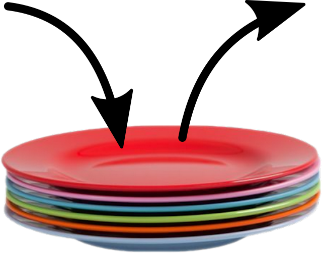
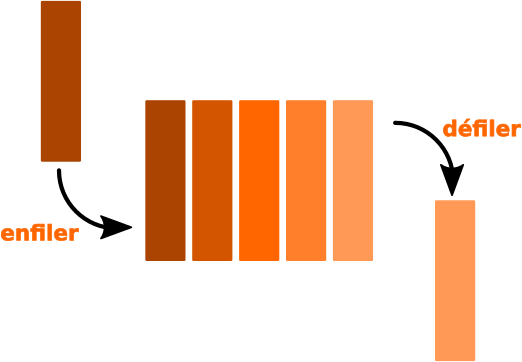

Thème 1 - Structure de données⚓︎
| 05 | Listes, Piles et Files |
|---|
Programme Terminale
| Contenus | Capacités attendues | Commentaires |
|---|---|---|
| Structures de données, interface et implémentation | Spécifier une structure de données par son interface. Distinguer interface et implémentation. Ecire plusieurs implémentations d'une même structure de données. | L'abstraction des structures de données est introduite aprés plusieurs implémentations d'une structure simple comme la file (avec un tableau ou avec deuc piles). |
| Listes, piles, files : structures linéaires. Dictionnaires, index et clé. | Distinguer des structures par le jeu des méthodes qui les caractèrisent. Choisir une structure adaptée à la situation à modéliser. Distinguer la recherche d'une valeur dans une liste et dans un dictionnaire. | On distingue les modes FIFO (First In First Out) et LIFO (Last In First Out) des piles et des files. |
Préambule : interface ≠ implémentation  ⚓︎
⚓︎
Vocabulaire
Les structures que nous allons voir peuvent s'envisager sous deux aspects :
- le côté utilisateur, qui utilisera une interface pour manipuler les données.
- interface : Vue "logique" de la structure de données. Elle spécifie la nature des données ainsi que l'ensemble des opérations permises sur la structure.
- le côté concepteur, qui aura choisi une implémentation pour construire la structure de données.
- Implémentation : Vue "physique" de la structure de données. Il s'agit de la programmation effective des opérations définies dans l'interface, en utilisant des types de données déja existants.
Nous avons déjà abordé ces deux aspects lors de la découverte de la Programmation Orientée Objet. Le principe d'encapsulation fait que l'utilisateur n'a qu'à connaître l'existence des méthodes disponibles, et non pas le contenu technique de celle-ci. Cela permet notamment de modifier le contenu technique (l'implémentation) sans que les habitudes de l'utilisateur (l'interface) ne soient changées.
Structures de données linéaires⚓︎
À chaque donnée sa structure⚓︎
En informatique comme dans la vie courante, il est conseillé d'adapter sa manière de stocker et de traiter des données en fonction de la nature de celles-ci.
En informatique, pour chaque type de données, pour chaque utilisation prévue, une structure particulière de données se revèlera (peut-être) plus adaptée qu'une autre.
Données linéaires⚓︎
Intéressons nous par exemple aux données linéaires. Ce sont des données qui ne comportent pas de hiérarchie : toutes les données sont de la même nature et ont le même rôle. Par exemple, un relevé mensuel de températures, la liste des élèves d'une classe, un historique d'opérations bancaires...
Ces données sont «plates», n'ont pas de sous-domaines : la structure de liste paraît parfaitement adaptée.
Lorsque les données de cette liste sont en fait des couples (comme dans le cas d'une liste de noms/numéros de téléphone), alors la structure la plus adaptée est sans doute celle du dictionnaire.
Les listes et les dictionnaires sont donc des exemples de structures de données linéaires.
Données non-linéaires⚓︎
Même si ce n'est pas l'objet de ce cours, donnons des exemples de structures adaptées aux données non-linéaires :
Si une liste de courses est subdivisée en "rayon frais / bricolage / papeterie" et que le rayon frais est lui-même séparé en "laitages / viandes / fruits & légumes", alors une structure d'arbre sera plus adaptée pour la représenter. Les structures arborescentes seront vues plus tard en Terminale.
Enfin, si nos données à étudier sont les relations sur les réseaux sociaux des élèves d'une classe, alors la structure de graphe s'imposera d'elle-même. Cette structure sera elle-aussi étudiée plus tard cette année.
Comment seront traitées ces données linéaires ? Introduction des listes, des piles et des files⚓︎
La nature des données ne fait pas tout. Il faut aussi s'intéresser à la manière dont on voudra les traiter :
- À quelle position les faire entrer dans notre structure ?
- À quel moment devront-elles en éventuellement en sortir ?
- Veut-on pouvoir accéder rapidement à n'importe quel élément de la structure, ou simplement au premier ? ou au dernier ?
Lorsque ces problématiques d'entrée/sortie n'interviennent pas, la structure «classique» de liste est adaptée. Mais lorsque celle-ci est importante, il convient de différencier la structure de pile de celle de file.
Les piles (stack)⚓︎

Une structure de pile (penser à une pile d'assiette) est associée à la méthode LIFO (Last In, First Out) :
- les éléments sont empilés les uns au-dessus des autres,
- et on ne peut toujours dépiler que l'élément du haut de la pile.
- Le dernier élément à être arrivé est donc le premier à être sorti.

Exemples de données stockées sous forme de pile
- lors de l'exécution d'une fonction récursive, le processeur empile successivement les appels à traiter : seule l'instruction du haut de la pile peut être traitée.

-
historiques de navigation sur le Web, la liste des pages parcourues est stockée sous forme de pile : la fonction «Back» permet de «dépiler» peu à peu les pages précédemment parcourues :

-
historiques d'annulation d'instructions (Ctrl+Z)
Interface
On dispose (ou souhaite disposer) sur une pile des méthodes/primitives suivantes:
- déterminer si la pile est vide (
est_vide,is_empty) - empiler un nouvel élément au sommet de la pile (
empiler,push) - dépiler l'élément du sommet de la pile (
depiler,pop) et le renvoyer
Ces opérations doivent être réalisées en temps constant, soit en \(O(1)\).

Les files⚓︎
Une file (queue) est une structure de données linéaire contenant des éléments généralement homogènes fondée sur le principe «premier arrivé, premier sorti» (en anglais FIFO : Fast In, First Out).

Exemples de situations utilisant une file:
- file d'attente : documents soumis à impression, élèves à la cantine...
- gestion des processus (plus tard...)
- parcours en largeur d'un arbre/graphe (plus tard...)
Interface
On dispose (ou souhaite disposer) sur une file des méthodes/primitives suivantes:
- déterminer si la file est vide (
is_empty) - enfiler (ajouter) un nouvel élément dans la file (
enqueue) - défiler l'élément de tête de la file (
dequeue) et le renvoyer
Ces opérations doivent être réalisées en temps constant, soit en \(O(1)\).
